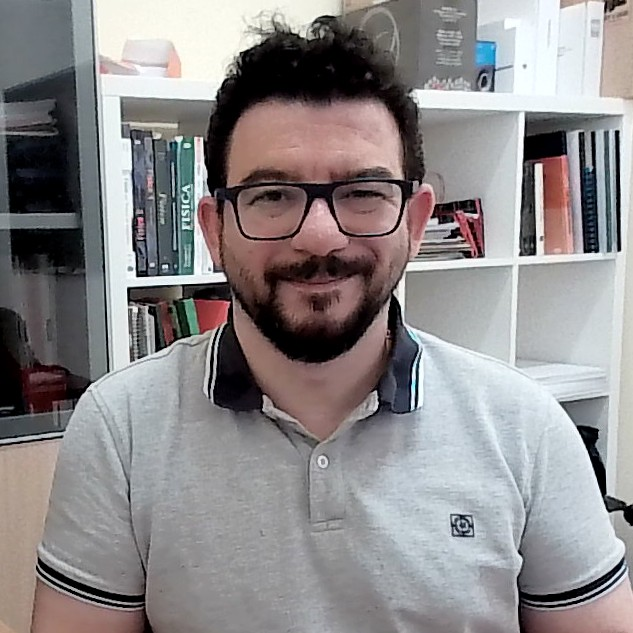

Open quantum systems
Understanding how a quantum system interacts with its environment, from memory effects to collision models and quantum optics.
Read the collision models reviewQuantum physics · University of Palermo
Exploring the interplay of
quantum dynamics, information,
and learning.
Associate Professor of Physics
Department of Physics and Chemistry

01 / Research
How do quantum systems exchange energy and information? My work connects their dynamics with new approaches to computation, learning, and control.
Understanding how a quantum system interacts with its environment, from memory effects to collision models and quantum optics.
Read the collision models reviewExploring quantum state reconstruction, information processing, and the capabilities of quantum extreme learning machines and reservoir computers.
Explore the research lineInvestigating heat, coherence, and the energetic cost of quantum processes, including the resources needed for quantum computation.
Explore the research line02 / Publications
Quantum machine learning
arXiv:2610.12015
Quantum machine learning
Quantum Machine Intelligence 8, 69
Quantum thermodynamics
Physical Review A 113, 052203
Quantum information · Machine learning
Science Advances 11, eady7987
Quantum machine learning
Physical Review Letters 132, 160802
Open quantum systems
Physics Reports 954, 1–70
Selected papers and preprints. For the complete and current record, visit Google Scholar or arXiv.
03 / About
I am an Associate Professor at the University of Palermo, where I study the dynamics of quantum systems and their applications to quantum technologies.
My academic path has taken me through postdoctoral research in Milano, Cosenza, and Palermo, and visiting research in Belfast and at IFISC in the Balearic Islands.
I hold the Italian National Scientific Habilitation for Full Professor in Theoretical Physics of Matter (02/B2).
View my Quantum Palermo profileCollaborative research
Quantum thermodynamics
Understanding the energetic cost of quantum computation and the resources that make it possible.
Discover the projectHybrid quantum learning
Bringing quantum extreme learning machines to problems in physics, chemistry, and astrophysics.
Discover the projectQuantum reservoir computing
Exploring quantum reservoirs, memory, and learning under realistic noise and thermodynamic constraints.
Discover the project04 / Contact
For research discussions and academic enquiries,
you can reach me at the University of Palermo.
Where I work
Department of Physics and Chemistry
University of Palermo
Palermo, Italy